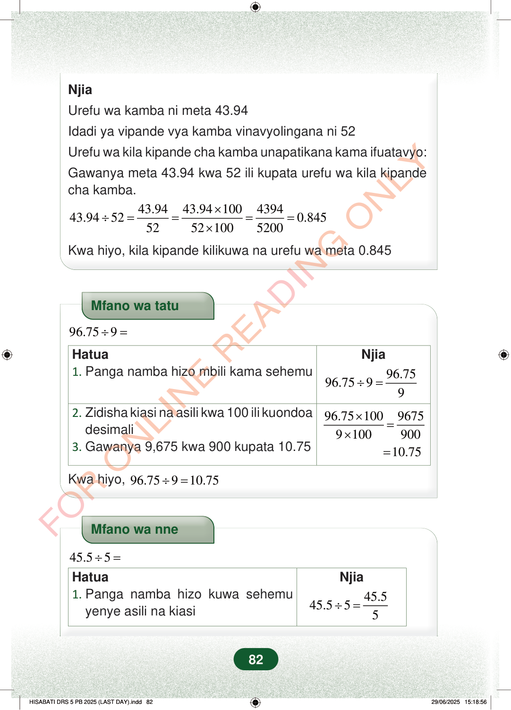

NjiaUrefu wa kamba ni meta 43.94Idadi ya vipande vya kamba vinavyolingana ni 52Urefu wa kila kipande cha kamba unapatikana kama ifuatavyo:Gawanya meta 43.94 kwa 52 ili kupata urefu wa kila kipandecha kamba.43.9443.94100439443.94520.84552521005200×÷====×Kwa hiyo, kila kipande kilikuwa na urefu wa meta 0.845Mfano wa tatu96.759÷=Hatua1.Panga namba hizo mbili kama sehemuNjia96.7596.7599÷=×=×=96.751009675910090010.752.Zidisha kiasi na asili kwa 100 ili kuondoadesimali3.Gawanya 9,675 kwa 900 kupata 10.75Kwa hiyo,96.75910.75÷=Mfano wa nne45.55÷=NjiaHatua1.Panga namba hizo kuwa sehemuyenye asili na kiasi45.545.555÷=82
Njia
Urefu wa kamba ni meta 43.94
Idadi ya vipande vya kamba vinavyolingana ni 52
Urefu wa kila kipande cha kamba unapatikana kama ifuatavyo:
Gawanya meta 43.94 kwa 52 ili kupata urefu wa kila kipande cha kamba.
43.94 43.94 100 4394 43.94 52 0.845 52 52 100 5200 × ÷ = = = = ×
Kwa hiyo, kila kipande kilikuwa na urefu wa meta 0.845
Mfano wa tatu
96.75 9 ÷ =
Hatua 1. Panga namba hizo mbili kama sehemu Njia
96.75 96.75 9 9 ÷ =
× = ×
96.75 100 9675 9 100 900 10.75
2. Zidisha kiasi na asili kwa 100 ili kuondoa desimali 3. Gawanya 9,675 kwa 900 kupata 10.75
Kwa hiyo, 96.75 9 10.75 ÷ =
Mfano wa nne
45.5 5 ÷ =
Njia
Hatua 1. Panga namba hizo kuwa sehemu yenye asili na kiasi
45.5 45.5 5 5 ÷ =
82
Njia ya kupata urefu wa kila kipande cha kamba kwa kugawanya mita 43.94 kwa 52. Jibu linaonyesha kila kipande kina urefu wa mita 0.845.NjiaUrefu wa kamba ni meta 43.94Idadi ya vipande vya kamba vinavyolingana ni 52Urefu wa kila kipande cha kamba unapatikana kama ifuatavyo:Gawanya meta 43.94 kwa 52 ili kupata urefu wa kila kipande cha kamba.<math><mrow><mn>43.94</mn><mo>÷</mo><mn>52</mn><mo>=</mo><mfrac><mn>43.94</mn><mn>52</mn></mfrac><mo>=</mo><mfrac><mrow><mn>43.94</mn><mo>×</mo><mn>100</mn></mrow><mrow><mn>52</mn><mo>×</mo><mn>100</mn></mrow></mfrac><mo>=</mo><mfrac><mn>4394</mn><mn>5200</mn></mfrac><mo>=</mo><mn>0.845</mn></mrow></math>Kwa hiyo, kila kipande kilikuwa na urefu wa meta 0.845Mfano wa tatu wa kugawanya 96.75 kwa 9 kwa kutumia sehemu. Jibu la mwisho ni 10.75.Mfano wa tatu<math><mrow><mn>96.75</mn><mo>÷</mo><mn>9</mn><mo>=</mo></mrow></math>HatuaNjia1. Panga namba hizo mbili kama sehemu<math><mrow><mn>96.75</mn><mo>÷</mo><mn>9</mn><mo>=</mo><mfrac><mn>96.75</mn><mn>9</mn></mfrac></mrow></math>2. Zidisha kiasi na asili kwa 100 ili kuondoa desimali3. Gawanya 9,675 kwa 900 kupata 10.75<math><mrow><mfrac><mrow><mn>96.75</mn><mo>×</mo><mn>100</mn></mrow><mrow><mn>9</mn><mo>×</mo><mn>100</mn></mrow></mfrac><mo>=</mo><mfrac><mn>9675</mn><mn>900</mn></mfrac><mo>=</mo><mn>10.75</mn></mrow></math>Kwa hiyo, 96.75 ÷ 9 = 10.75Mfano wa nne unaoanza kuonyesha jinsi ya kugawanya 45.5 kwa 5. Hatua ya kwanza ni kuandika 45.5 kwa 5 kama sehemu.Mfano wa nne<math><mrow><mn>45.5</mn><mo>÷</mo><mn>5</mn><mo>=</mo></mrow></math>HatuaNjia1. Panga namba hizo kuwa sehemu yenye asili na kiasi<math><mrow><mn>45.5</mn><mo>÷</mo><mn>5</mn><mo>=</mo><mfrac><mn>45.5</mn><mn>5</mn></mfrac></mrow></math>Mwendelezo wa mfano wa nne wa 45.5 kugawanywa kwa 5. Baada ya kuondoa desimali, jibu la mwisho ni 9.1.2. Zidisha kiasi na asili kwa 10 ili kuondoa desimali3. Gawanya 455 kwa 50 kupata 9.1<math><mrow><mfrac><mrow><mn>45.5</mn><mo>×</mo><mn>10</mn></mrow><mrow><mn>5</mn><mo>×</mo><mn>10</mn></mrow></mfrac><mo>=</mo><mfrac><mn>455</mn><mn>50</mn></mfrac><mo>=</mo><mn>9.1</mn></mrow></math>Kwa hiyo, 45.5 ÷ 5 = 9.1